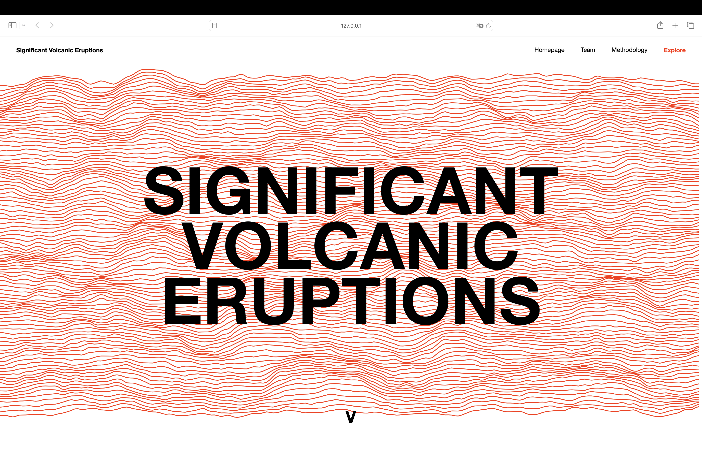
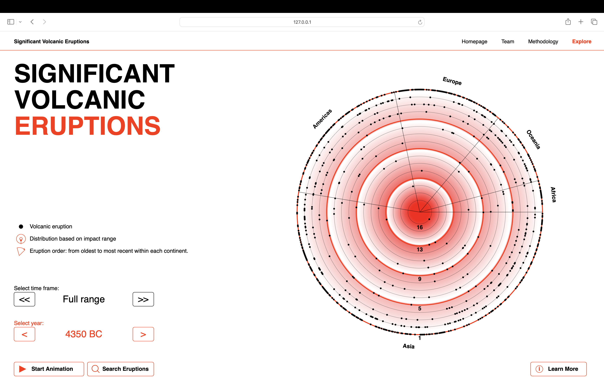
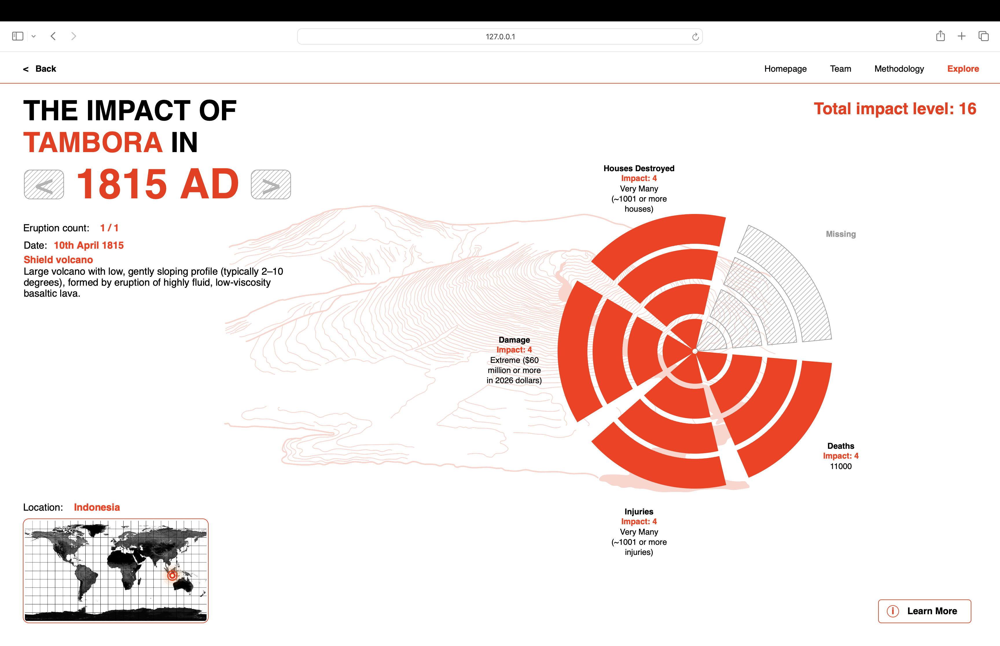
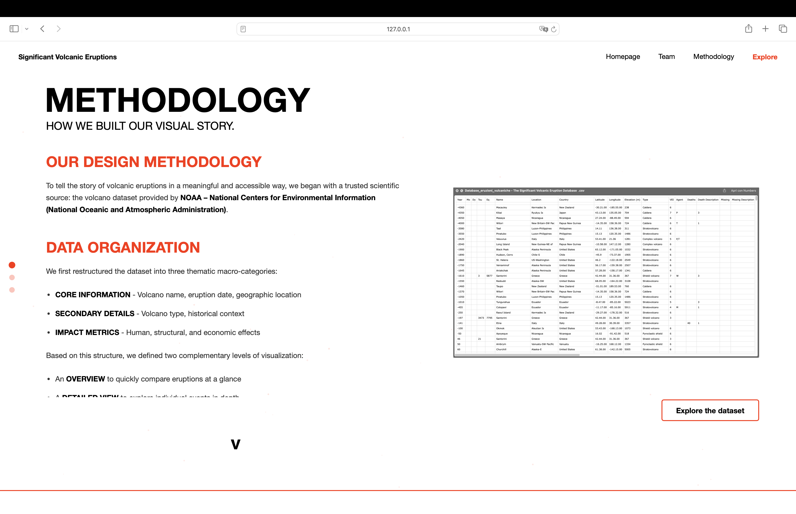

This information design project analyses and visualises the global impact of the most significant volcanic eruptions, focusing on their direct human and economic consequences. Drawing on the official NOAA database, we have selected and processed a dataset of 724 catastrophic events to provide two perspectives: an overview of the geographical and temporal distribution of these phenomena, and a detailed analysis of the specific damage caused. The aim is to provide an analytical tool that allows the scale of eruptions to be compared using a customised impact index, integrating technical illustrations and educational content to provide a comprehensive understanding of volcanic phenomena.




The methodological core of the project lies in data normalisation and enrichment. We have introduced a new parameter called ‘Impact’, calculated by synthesising the categories relating to deaths, injuries, missing persons and material damage, which allows each eruption to be compared on a quantitative scale (with the 1815 Tambora eruption as the maximum reference value). To make the historical economic data more up-to-date and comprehensible, we have also converted the monetary damages from the original dataset into 2026 US dollars. This ‘data cleaning’ process was supported by the integration of artificial intelligence tools, which were essential for correcting the original geographical coordinates and ensuring accurate and true-to-life equirectangular mapping.
The interface is divided into macro and micro views, supported by ‘Learn More’ sections that guide the user in interpreting the metrics. From a stylistic perspective, we chose to accompany the numerical data with original illustrations classifying the types of volcanoes involved, facilitating morphological recognition for a non-expert audience. Developing the code presented a significant technical challenge: we managed complex animations and dynamic scrolling systems to ensure smooth navigation, transforming a static database into an interactive and responsive digital experience.
The project required constant multidisciplinary coordination, from prototyping in Figma to writing the final code, including statistical analysis and the creation of illustrative assets. The result is a platform that does more than simply visualise data; it transforms it into meaningful information, highlighting the delicate relationship between the planet’s geological activity and human presence in the area.